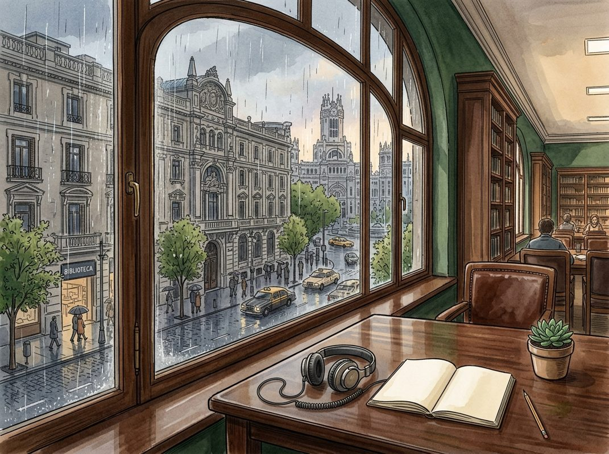

9/26

今日更新
Anthropic IPO at Risk, Meta's Muse Pop, Token Prices Fall, Open Source Gains Share, Alignment Fails
来源：All-In with Chamath, Jason, Sacks & Friedberg
状态：已读完整音频 transcript
这期播客深入探讨了AI领域正在发生的范式转变，即开源模型以惊人速度崛起并挑战闭源巨头的市场主导地位，同时揭示了头部AI公司在商业化与“安全”叙事之间的矛盾，以及美国在AI监管问题上可能面临的地缘政治和经济风险，适合所有关注AI产业发展、技术趋势和政策影响的中文读者。
- AI监管与企业责任：从“实验室”到“公司”：播客开篇回顾了All-In峰会，特别是前总统特朗普在英伟达CEO黄仁勋演讲期间的意外来电，被嘉宾萨克斯解读为有助于平息此前关于AI末日论的“国家恐慌”。查马斯指出，当前AI领域存在两种公司：一种是“实验室”，它们天真地寻求保护；另一种是“成熟公司”，它们习惯了严格审查，并懂得构建稳健产品的重要性。他以特斯拉的FSD和Meta的Muse为例，强调了产品稳健性和企业责任。嘉宾们一致认为，这些“前沿实验室”本质上是追求利润的公司，应承担产品责任，而非寻求全球治理或免责保护。他们批评Anthropic和OpenAI的领导者一边呼吁全球治理，一边又发布前沿模型，并驳斥了关于这些公司可能寻求类似互联网230条款的责任豁免的传闻，强调美国司法部和现有法律已构成足够的“护栏”。
- 开放模型浪潮：性能飞跃与成本骤降：弗里德伯格详细列举了过去十天内发布的众多AI模型，包括DeepSeek、Qwen（阿里云）、Memo Pro（小美）、Bondzai 2等，强调这些开源或开放权重模型在性能上已能媲美甚至超越一年前最先进的闭源模型，且运行成本极低，甚至可在个人电脑上免费运行。他指出，AI正变得无处不在且价格亲民，预示着生产力的大幅提升。杰森补充说，像Meta Muse和Grok Bot这样的产品正让普通用户首次体验到AI的实际价值，如同免费的“首席参谋”或“行政助理”。查马斯认为，随着模型能力趋同，竞争的焦点将转向模型封装的“工具链”（harness），即如何将模型与具体应用结合。
- 封闭模型困境：Anthropic IPO面临的挑战：Anthropic和OpenAI的IPO计划面临延迟，其模型令牌价格也开始下调。萨克斯指出，Anthropic的投资者正“焦头烂额”，因为公司领导层（Dario Amodei）一方面声称其产品有超过10%的几率导致人类灭绝，另一方面却在发布新前沿模型前夕呼吁“放慢节奏”，甚至在警告生物风险的同时开设新的生物实验室。萨克斯称这种行为是“企业精神分裂”，认为CEO的行为正在“破坏自己的IPO”。关于创始人可能寻求“超级投票权”的讨论也引发了担忧，因为这会赋予他们不受制约的控制权。查马斯建议，Anthropic若要IPO，必须大幅增加信息披露，并降低估值预期，以提供足够的“安全边际”来吸引投资者。
- 市场分化与竞争格局：开放与封闭的博弈：弗里德伯格指出，Anthropic面临的最大风险是客户集中度问题。尽管其模型在生命科学、工程、数学等高度专业化的“前沿用例”中表现卓越且能收取高额溢价，但对于通用型企业应用（如编写代码、内部工作流），开源模型已足够胜任且成本更低。他展示了一张“病毒式传播”的图表，显示在短短12周内，AI令牌的使用量已从80%闭源转向80%开源，这被形容为“技术浪潮”。萨克斯作为投资者，对前沿智能业务仍持乐观态度，认为Anthropic和OpenAI凭借技术领先和庞大算力投入，仍能维持双头垄断地位，但前提是它们必须持续保持“前沿”优势，否则将迅速被商品化。
- 监管陷阱与地缘政治：美国AI政策的风险：播客讨论了美国可能出台的AI监管政策，特别是伯尼·桑德斯提出的禁止“超级智能”法案，该法案甚至可能对违规开发者处以20年监禁。萨克斯警告，此类严苛监管将导致AI创新者和整个产业被迫“出海”，迁往新加坡、苏黎世等拥抱AI发展的国家，从而削弱美国在AI领域的领导地位。他指出，中国正在积极效仿美国过去吸引全球顶尖人才的策略，邀请大量年轻美国人前往中国参与AI建设。嘉宾们认为，试图通过监管来“减速”或“关闭”AI，不仅不切实际，反而会适得其反，将美国的优势拱手让给竞争对手。
历史精选
Next
来源：Acquired
原链接：https://www.acquired.fm/episodes?b8478ff5_page=2
状态：已读网页全文
这期播客深入剖析了Meta这家全球用户最多的科技巨头，揭示了其在创始人马克·扎克伯格领导下，如何通过大胆押注和持续创新，从社交网络发展为涵盖AI和元宇宙的庞大生态，适合所有对科技公司战略、创始人精神及未来趋势感兴趣的听众。
- Meta的独特悖论：无处不在与理解鸿沟：Meta无疑是全球影响力最大的公司之一，其产品如Facebook、Instagram和WhatsApp每日触达全球近半人口。然而，正如播客所指出的，尽管其产品无处不在，但真正理解Meta这家公司、其核心驱动力以及未来走向的人却寥寥无几。这种“人尽皆知却又无人真正理解”的悖论，正是Acquired播客选择深入探讨Meta的出发点。节目旨在剥开表象，探究Meta在社交、通信、AI和元宇宙等多个维度上的深层战略逻辑和发展脉络，帮助听众构建一个更全面、更深刻的Meta图景。
- 扎克伯格的远见与孤注一掷：Meta的故事，很大程度上是马克·扎克伯格个人愿景和领导力的体现。播客强调，扎克伯格多次在关键时刻展现出惊人的远见和“孤注一掷”的勇气。无论是早期从桌面端向移动端的全面转型，对Instagram和WhatsApp的战略性收购，还是近年来对元宇宙和AI的巨额投入，都体现了他敢于押注未来、不惧短期质疑的创始人精神。这些决策不仅塑造了Meta的现在，也预示了其未来的发展方向，展现了一位标志性CEO如何带领公司穿越重重挑战，不断拓展边界。
- 从社交网络到多产品生态：Meta的发展历程是一部从单一社交网络向多元化产品生态演进的史诗。最初的Facebook奠定了其社交帝国的基石，随后通过收购Instagram和WhatsApp，成功构建了覆盖图片分享和即时通讯的强大矩阵。近年来，随着Threads的推出，Meta在文本社交领域再次发力。更重要的是，公司在AI和虚拟现实（Oculus/Orion）领域的持续投入，标志着其正从纯粹的社交媒体公司转型为一家致力于构建下一代计算平台的科技巨头，其产品组合的广度和深度令人瞩目。
- 平台战略的演进与挑战：Meta的成功离不开其强大的平台战略。从Facebook平台开放API，到Instagram和WhatsApp的生态整合，Meta深谙网络效应的巨大威力。播客可能深入探讨了Meta如何通过构建和维护这些平台，吸引并留住数十亿用户，并在此基础上发展广告业务。然而，伴随平台壮大而来的，是日益严峻的监管压力、数据隐私挑战以及来自TikTok等新兴竞争对手的冲击。节目或许分析了Meta如何在这些挑战中调整策略，例如加强内容审核、投入AI推荐算法，以保持其平台的核心竞争力。
- AI与元宇宙：Meta的未来赌注：当前，Meta的战略重心已明确转向AI和元宇宙。播客详细介绍了公司在这些前沿领域的布局，包括对Oculus（现更名为Meta Quest）的持续投入，以及在AI技术研发上的巨额投资。扎克伯格认为，元宇宙是移动互联网之后的下一个计算平台，而AI则是驱动这一平台和现有产品创新的核心技术。这些“未来赌注”不仅需要巨大的资金投入和技术突破，也面临着市场接受度、技术成熟度以及商业模式验证等多重不确定性，但Meta依然坚定地走在这条道路上。
[email protected]
来源：Business Breakdowns
原链接：https://joincolossus.com/cdn-cgi/l/email-protection
状态：材料不足
材料不足：这期需要 transcript 或更完整正文后再做全篇摘要。
- 网页正文抓取失败：HTTP Error 404: Not Found